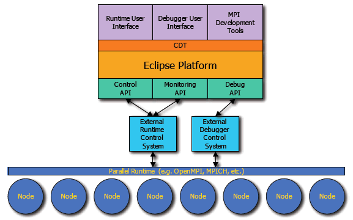

PTP - Overview and Features
The Parallel Tools Platform (PTP) objectives include:
- Extending Eclipse to support parallel application development.
Not just for MPI, but for other environments and APIs as well.
- Equipping Eclipse with key tools needed to start developing
parallel codes. This includes the Parallel runtime, parallel debugger,
Fortran, etc.
- Encouraging parallel tool developers to support Eclipse
- Developing a new generation of parallel tools needed to
meet the demands of HPCS.
PTP Architecture

Back to Top | Back to Table of Contents